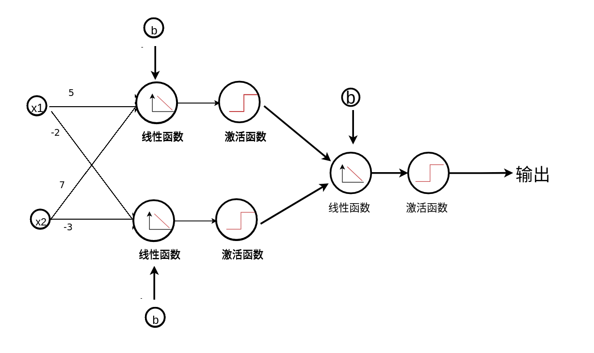

02-机器学习&神经网络¶
让机器有能力去根据数据学习
不是人类的if和else控制
-
监督学习： 最成熟，落地案例最多。我们的视觉处理大多数都是监督学习。
-
小孩学习，类似监督学习，这是猫，这是狗，这是兔子
-
非监督学习：找到不同类型的数据，kmeans 聚类算法
-
帮助梳理不同类型的数据，拆分重要的内容
-
自监督学习，数据不需要打标签，不需要人教，机器自己去学习数据和标签
-
例如，给定一个视频，让你预测视频的下一秒发生什么内容
-
强化学习：通过给机器错误的示范，让机器来学习正确的内容
-
机器玩游戏，属于强化学习的范围。
机器学习的步骤¶
我们的课程，以应用型人工智能为主，主要是把技术应用于生产生活，不是写论文。
大多数内容放在监督学习这一块。
- 收集数据
- 数据清洗
- 数据标注
- 数据增强
- 模型选择
- 模型训练
- 模型评估
- 新的预测
一些书面术语¶
- Target 目标值， Actual 真实值，real值
- Prediction ，预测值，Guess 猜测值
- classes， 分类类型 （男，女）（0,1,2...9)
- regression 回归
- validation 验证 test 测试验证
神经网络入门¶
（1）神经元之间兴奋的传递方向只能是 __ 的，图中有甲、乙两个神经元，正常情况下，它们之间神经冲动的传递方向由 _ → ___ 。
（2）这是因为神经递质只能由前一神经元的__ 释放，经扩散经过 __ 后，再与后一神经元 __ 上的特异性 _____ 结合，引发后一神经元的神经冲动。在上图中圈出突触存在的位置。
（1）单向 甲→乙 （2） 突触前膜 突出间隙 突触后膜 受体
回顾感知机
为什么需要神经网络¶
神经网络其实是感知机的网络，那么为什么需要感知机网络呢？
单个神经元（感知机）的缺陷¶
核函数 Polynomial Kernel¶
y=x^2
现在是不是一条线就可以把两种颜色的点给区分出来了
这种做法其实就是支持向量机算法（svm）的核函数做法。
之前每个点的坐标是y=1， 现在先把每个点的坐标y轴的值变为 y = 1+x^2
再去进一步的进行感知机运算。
还有很多的核函数，径向基核函数，多项式核函数，高斯核函数.... 这些都是支持向量基算法研究的内容，但是这些奇技淫巧，我们都不介绍了。因为这些方法用神经网络都可以自动实现。
为什么，我们来分析一下。

深度神经网络¶

深度神经网络 可以拟合更复杂的数据
数学理论支持，泰勒公式¶
泰勒公式，一个函数可以分解成多项式的和的形式
f(x) = \sum_{k=0}^\infty c_k x^k = c_0 + c_1 x + c_2 x^2 + \dotsb.
项越多，越接近原函数
每一项的作用被n!削弱，n越大，削弱的越厉害
sin(x) 仿真
1 2 3 4 5 | |
泰勒展开¶
f(x) = f(x_0) + f`(x_0) △x
结果 = 现状+ 直接原因引起的变化 + 原因的原因引起的变化
提高学习成绩， 当前的状态 f(x0) ，要在dx时间内尽快提高， 最要紧的就是学起来, 再研究怎么学
任何复杂的事物都可以简单话，sinx在趋近于0的时候 等于x， 什么都不做，就是0，老子道德经无为而治就是什么都不做，
泰勒级数可以无限逼近问题的本质，但是通常情况下，我们不需要完全逼近事物的本质，工程解决问题就是只要误差可以接受就可以，所以我们说不用数学求解答案，而是通过计算机拟合结果。
任何复杂的公式，在很小的一个范围内变化，都可以用线性的函数来表示。
代码实战-训练或运算¶
1 2 3 4 5 6 7 8 9 10 11 12 13 14 15 16 17 18 19 20 21 22 23 24 25 26 27 28 29 30 | |
代码实战-训练异或运算¶
1 2 3 4 5 6 7 8 9 10 11 12 13 14 15 16 17 18 19 20 21 22 23 24 25 26 27 28 29 30 | |
一层神经网络不够了，一个神经元解决不了非线性分类问题。
1 2 3 4 5 6 7 8 9 10 11 12 13 14 15 16 17 18 19 | |
参考文档： https://keras.io/metrics/
'sgd': SGD'rmsprop': RMSprop'adagrad': Adagrad'adadelta': Adadelta'adam': Adam'adamax': Adamax'nadam': Nadam'tfoptimizer': TFOptimizer
epochs ,iterations, batches¶
- epochs ： training data 正向/反向 传播一遍，是一个epochs ，对应单个神经元来讲， 就是实现一次全数据集的梯度下降。epochs可能需要上千次，或者上万次。
- batches：一次加载梯度下降的数据，batches数据量越大，内存开销越大，但是拟合程度越好，训练的越慢； batches越小，内存开销越小，拟合程度越低，训练的快，如果batches=1 就是sgd（stochastic gradient decent） ， 一般我们倾向使用mini-batches gradient decent。
- iteration： 非常容易混淆的概念，其实非常简单，就是一个epochs，需要循环几次，跟你的batches size有密切关系，如果batches size 等于数据集合的大小，那么1个iteration就训练了一个epochs， 如果1000条数据，每个batches是10，那么就需要100个iteration才能完成一个epochs
loss 和 accuracy¶
准确率： 分类正确的数据条数除以总的数据条数。
loss是误差函数评估的模型。
以0.6的概率决策边界为例
模型（0.7, 0.3)和模型（0.99， 0.01）的预测准确率是一样的，输出都是（1,0） 但是相比来说，第二个模型的loss会更底一点。
loss和accuracy提供的信息维度是不一样的， 但他们之间是有相互关系的。如果loss值变大， 分类的精确度肯定会变差。
loss 是父母给我们报了一堆辅导班，辅以棍棒或是糖果优化算法，诱导我们通过辅导班增强自己的能力，减少我们的能力值与辅导班声称的能力值之间的差距。accuracy 则是我们的高考成绩。